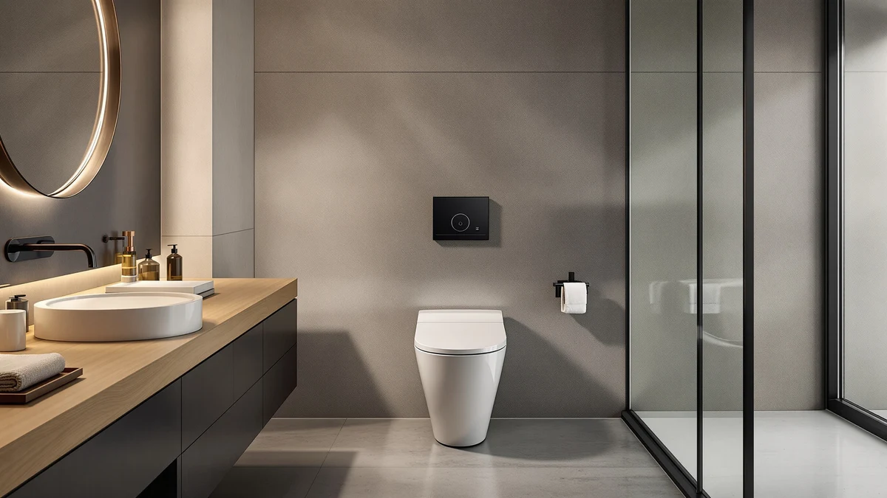

HOROW T38 Smart Toilet Review (2026): Worth It?
Prices and picks verified as of September 2026. Independent, reader-supported reviews.


Quick Answer
This HOROW T38 Smart Toilet review centers on a $999.00 one-piece unit marketed as a smart toilet, the only model in this comparison with that positioning. If you want a standard one-piece toilet without the smart-toilet premium, the Sublime II and DeerValley alternatives below all sit between $218.01 and $221.99, roughly $780 less than the HOROW T38.
Our pick: HOROW T38 Smart Toilet with, $999.00 Check Price on Amazon
Bottom line: our top pick is the HOROW T38 Smart Toilet with Bidet at $999.
Things to Know Before You Buy
- HOROW prices the T38 Smart Toilet at $999.00, by far the most expensive of the four models in this HOROW T38 Smart Toilet review.
- The T38 is marketed as a smart toilet, while the Sublime II and DeerValley alternatives below are standard one-piece toilets with no smart features.
- The Swiss Madison Sublime II comes in two rough-in sizes here, 10 inch at $221.99 and 12 inch at $218.01, so measure your existing setup before you order either.
- The DeerValley Elongated One Piece Toilet costs $219.00, landing between the two Sublime II variants and well under the T38's price.
This HOROW T38 Smart Toilet review looks at whether the $999.00 price tag on HOROW's one-piece smart toilet is justified next to three lower-priced one-piece alternatives already covered on this site. HOROW markets the T38 as a smart toilet, a category the other three models in this comparison do not claim, and prices it well above them as a result. We pulled together HOROW's own product listing, including the five images HOROW publishes of the toilet from different angles, and set it beside the Swiss Madison Sublime II in both its 10 inch and 12 inch rough-in versions and the DeerValley Elongated One Piece Toilet, three standard one-piece models that cover the same general toilet category at a fraction of the T38's price.
The short version: if smart-toilet functionality matters to you and price is not the deciding factor, the HOROW T38 is worth a look, but it costs roughly $780 more than any of the three alternatives below, none of which claim smart features at all. Pick the T38 if you specifically want that smart-toilet positioning in a one-piece unit. Pick one of the three alternatives if you want a conventional one-piece toilet and would rather put the savings toward something else in the bathroom.
Why You Should Trust Us
Ilane Tall has spent more than ten years researching bathroom fixtures, including one-piece and smart toilets, for Best One Piece Toilets. She built this HOROW T38 Smart Toilet review by comparing HOROW's own published listing against the closest competitors on price and category, the same side-by-side process the site uses for every review. We do not accept payment from HOROW, Swiss Madison, or DeerValley to influence placement, and our Amazon links earn a commission only if you buy, which does not change what we recommend.
Our Research Experience
For this HOROW T38 Smart Toilet review, we started with HOROW's own product listing: the five photos of the toilet from multiple angles, the smart-toilet positioning, and the $999.00 price. We then lined up the T38 against the closest one-piece toilets already covered on Best One Piece Toilets, narrowing the field to the Swiss Madison Sublime II in its 10 inch and 12 inch rough-in versions and the DeerValley Elongated One Piece Toilet, three models that cluster tightly between $218.01 and $221.99. None of the four listings we pulled has built up a public rating or review count, so we weighted our comparison toward the facts we could verify directly: published price, product category, and rough-in size where HOROW or the manufacturer lists one. That gap in verified owner feedback is also why we lay out each toilet's documented price and category side by side instead of ranking them on star counts that do not exist yet, and it is a limitation worth keeping in mind as you read the rest of this HOROW T38 Smart Toilet review.
Overview & Specs

HOROW T38 Smart Toilet with
What we like
- Markets itself specifically as a smart toilet, a category none of the three lower-priced alternatives claim
- HOROW publishes five images of the toilet from multiple angles, more visual documentation than a single product photo gives you
- One-piece construction means one seamless unit to install rather than separately fitted tank and bowl pieces
Flaws but not dealbreakers
- Priced roughly $780 higher than any of the three standard one-piece toilets in this HOROW T38 Smart Toilet review
- No public rating or review count on the listing we pulled, so you are relying on HOROW's own description rather than verified buyer feedback
- The listing does not publish a rough-in measurement, so confirm it fits your existing setup before you order
| Material | — |
| Size | — |
HOROW builds the T38 as a one-piece toilet marketed under its smart-toilet line, a positioning that sets it apart from the three conventional alternatives further down this HOROW T38 Smart Toilet review. That smart-toilet branding is the main reason to consider the T38 over toilet-only competitors, since you are paying for a feature category the Sublime II and DeerValley models do not claim to offer. HOROW's listing includes five images of the toilet from different angles, giving you a fuller visual sense of the design than a single product photo would, and that level of documentation matters when you are spending close to $1,000 sight unseen.
At $999.00, the T38 sits well above the other three toilets in this comparison, and that gap is the central trade-off you need to weigh before you buy. The Swiss Madison Sublime II, available here in 10 inch and 12 inch rough-in versions, costs $221.99 and $218.01 respectively, while the DeerValley Elongated One Piece Toilet lands at $219.00. None of the four listings we pulled has built up a public review count yet, so the decision comes down to how much you value the smart-toilet category itself versus the roughly $780 you would save by choosing a standard one-piece toilet instead.
What We Liked
The clearest advantage in this HOROW T38 Smart Toilet review is the category itself. Instead of buying a standard one-piece toilet and later shopping separately for smart features, the T38 bundles that positioning into a single $999.00 listing, which simplifies research if a smart toilet is what you set out to buy in the first place. HOROW also documents the toilet with five images from different angles, more visual coverage than a bare product photo offers, and that helps you judge fit and finish before you commit to spending this much. For buyers who have already decided they want a smart one-piece toilet and are not trying to piece together features from separate products, that all-in-one positioning is worth the premium HOROW charges for it.
What Could Be Better
The biggest drawback in this HOROW T38 Smart Toilet review is price relative to the field. At $999.00, the T38 costs roughly $780 more than the Sublime II 10 inch, the Sublime II 12 inch, or the DeerValley Elongated One Piece Toilet, all three of which cluster within four dollars of each other between $218.01 and $221.99. HOROW also has not accumulated a public rating or review count on the listing we pulled, so we cannot confirm long-term durability or real-world smart-feature performance beyond what HOROW's own product description states. That missing track record is a real gap when you are spending this much on a bathroom fixture, and it is worth weighing alongside the price itself. If your bathroom does not strictly need smart-toilet features, that price gap is hard to justify next to the cheaper alternatives below.
Who Is It For?
The HOROW T38 Smart Toilet fits buyers who have already decided they want smart-toilet functionality in a one-piece unit and are remodeling with enough budget to absorb the premium over a standard toilet. Anyone who specifically searched for a smart toilet rather than a conventional one-piece model will find the T38 a reasonable match for that intent. Shopping mainly on price? The Swiss Madison Sublime II in this HOROW T38 Smart Toilet review covers the standard one-piece category for roughly $780 less, in either a 10 inch or 12 inch rough-in. And if you need a reliable elongated one-piece toilet with no smart features at all, the DeerValley at $219.00 handles the basics for a fraction of what HOROW charges.
Alternatives to Consider
If the $999.00 price gives you pause, these three toilets cover the standard one-piece category for meaningfully less money, and each is worth a look in this HOROW T38 Smart Toilet review.

Editor’s Pick
Sublime II One-Piece 10" Rough-in
The Sublime II's 10 inch rough-in version costs $221.99, a saving of $777.01 over the HOROW T38, and covers the standard one-piece category without any of the smart-toilet extras. It is the pick if your existing plumbing measures a 10 inch rough-in and you do not need smart features.
$221.99
Check Price on Amazon
Best Value
DeerValley Elongated One Piece Toilet
DeerValley prices its elongated one-piece toilet at $219.00, right in the middle of the three alternatives here, and skips smart-toilet features entirely to focus on a straightforward elongated bowl design. It is worth considering if you want a conventional one-piece toilet without paying HOROW's smart-toilet premium.
$219.00
Check Price on Amazon
Premium Choice
Sublime II One-Piece 12" Rough-in
The Sublime II's 12 inch rough-in version comes in at $218.01, the lowest price in this HOROW T38 Smart Toilet review, and shares the same standard one-piece design as its 10 inch sibling. Choose this version if your rough-in measures 12 inches rather than 10.
$218.01
Check Price on AmazonFrequently Asked Questions
Is the HOROW T38 Smart Toilet worth $999?
It is worth $999 if you specifically want smart-toilet functionality built into a one-piece unit rather than a standard toilet with no added features. If price matters more than that, the Sublime II One-Piece 10 inch Rough-in in this HOROW T38 Smart Toilet review covers the basics for $221.99, a saving of $777.01.
How does the HOROW T38 compare to the Sublime II and DeerValley toilets?
The HOROW T38 is marketed as a smart toilet, while the Sublime II and DeerValley models in this comparison are standard one-piece toilets without smart features. That category gap explains most of the $780 price difference between the HOROW T38 and the three alternatives, all of which sit close together between $218.01 and $221.99.
Which rough-in size do I need for a HOROW T38 replacement?
The HOROW T38 listing we pulled does not publish a rough-in figure, so measure your existing setup before you order. The Sublime II alternatives in this HOROW T38 Smart Toilet review come in both 10 inch and 12 inch rough-in versions, which is worth checking regardless of which toilet you choose.
Final Verdict
This HOROW T38 Smart Toilet review comes down to a straightforward trade-off. HOROW's T38 is a one-piece toilet with smart-toilet positioning priced at $999.00, the highest among the four models we compared, and it lacks the public review history that would let us confirm long-term performance firsthand. If you want that smart-toilet category specifically and price is not the deciding factor, HOROW is a reasonable buy at that price. If you would rather save roughly $780 or do not need smart features at all, the Sublime II and DeerValley alternatives above are worth a look.